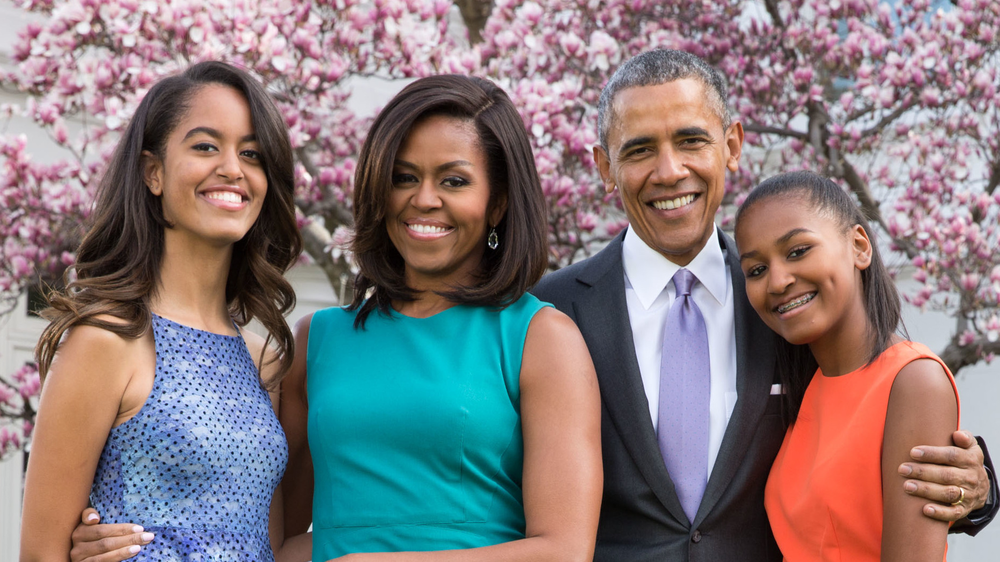

The first African-American woman to serve as the First lady of the United States

Michelle Obama with her family in the Rose Garden of the White House
Here's a time line of Michelle Obama
1964 - Michelle LaVaughn Robinson was born in Chicago.
1981 - Michelle was inspired to follow her brother to Princeton University,
which she didi in 1981.
1985 - She majored in sociology and minored in African-American studies and
graduated with a Bachelor of Arts Degree.
1988 - She pursued professional study, earning her Juris Doctor (J.D.)
degree from Harvard Law School.
1991 - Michelle's father, Fraser, died from complications from his illness.
1991 - she held public sector positions in the Chicago city government as
an Assistant to the Mayor, and as Assistant Commissioner of Planning and Development
1992 - Michelle married to Barack Obama.
1993 - she became Executive Director for the Chicago office of Public
Allies.
1996 - Her husband Barack Obama was elected to the state senate.
1998 - Michelle's first daughter Malia Ann was born.
2001 - Her second daughter Natasha was born.
2002 - she began working for the University of Chicago Hospitals.
2008 - Started her husband's campaign for US Presiden.
2009 - 2017 - Michelle Obama served as the first lady of the United States.
2021 - The former first lady announced that she has been "moving toward
retirement".
Your story is what you have, what you will always have. It is something to own. ― Michelle
Obama